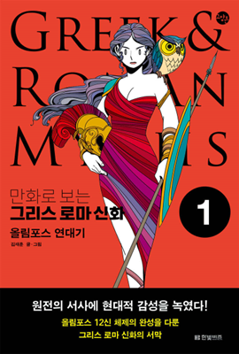
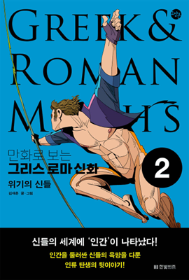

학습 목표
- 1. 그리스 로마 신화에 대한 학습을 통해 서양 문화의 기초를 이해하고 사고의 폭을 넓힐 수 있다.
- 2. 신들의 처세술을 바탕으로 직장생활에서 가져야 할 마음가짐과 행동 특성을 파악하고 적용할 수 있다.
교육 특징
-
1. 만화 컷툰을 통해 학습내용을 확인하며 시각적으로 이해하자!
저서 ‘올림포스 연대기’의 만화 컷툰들을 강의에 직접 활용함으로써 학습내용을 시각적으로 이해
-
2. 한 권의 책을 보는 듯한 강의 구조를 통해 체계적으로 학습하자!
개별 에피소드가 많고 등장인물이 많은 그리스 로마 신화에 대한 학습내용을 효과적으로 제시하기 위해 구조적으로 설계
-
3. 신들의 처세술을 바탕으로 직장생활에서의 Tip을 얻어내자!
신들의 행동 특성 및 유형을 바탕으로 직장생활에서 중요하게 고려해야 하는 핵심적인 인생 Tip과 처세술을 제공하는 강의
교육 대상
- 1. 기업체 전 임직원
- 2. 신화를 바탕으로 직장생활에 대한 Tip을 얻고자 하는 직장인
- 3. 그리스 로마 신화에 관심이 있는 모든 일반인
강의 목차
- 제1장 신들의 탄생과 올림포스의 계보
- 제2장 올림포스 12신, 그들의 이야기
- 제3장 제우스의 사랑과 올림포스의 스캔들
- 제4장 신들의 세대교체, 거대한 전쟁
- 제5장 프로메테우스가 인간에게 남긴 유산
- 제6장 재앙을 담은 선물, 판도라의 상자
- 제7장 그리스 신화의 최강 빌런
- 제8장 인간적인 신, 디오니소스
강사 소개
강사명
김재훈
경력
TV 만화 〈올림포스 가디언〉 미술감독
중앙일보 문화 카툰 연재
만화로 보는 그리스 로마 신화 1~2권(2023. 08., 한빛비즈)
데일 카네기 인간관계론 1~2권(2025. 02., 미래엔아이세움)
만화로 보는 3분 철학 1~3권(2025. 01., 카시오페아)
사이언스툰 과학자들 1~5권(2023. 09., 휴머니스트)
올림포스 연대기(2022. 04., 한빛비즈)
친애하는 20세기(2021. 04., 휴머니스트) 외 다수
중앙일보 문화 카툰 연재
만화로 보는 그리스 로마 신화 1~2권(2023. 08., 한빛비즈)
데일 카네기 인간관계론 1~2권(2025. 02., 미래엔아이세움)
만화로 보는 3분 철학 1~3권(2025. 01., 카시오페아)
사이언스툰 과학자들 1~5권(2023. 09., 휴머니스트)
올림포스 연대기(2022. 04., 한빛비즈)
친애하는 20세기(2021. 04., 휴머니스트) 외 다수
참고 도서

도서명
만화로 보는 그리스 로마 신화 1 : 올림포스 연대기
저자명
김재훈
도서소개
모든 문명과 학문의 근간으로, 오랫동안 인간의 삶과 철학에 영향을 준 그리스 로마 신화를 쉽고 깊이 있게
다룬 시리즈가 나왔다. 난해하고 어려운 원전에 충실하면서도 작가만의 상상력으로 서술의 빈틈을 꼼꼼하게 채워 넣으며, 독특한 그림체와 철학을 담은 서사로
정평 난 김재훈 작가의 감각이 유감없이 발휘된 작품이다.
참고 도서

도서명
만화로 보는 그리스 로마 신화 2 : 위기의 신들
저자명
김재훈
도서소개
모든 문명과 학문의 근간으로, 오랫동안 인간의 삶과 철학에 영향을 준 그리스 로마 신화를 쉽고 깊이 있게
다룬 시리즈가 나왔다. 난해하고 어려운 원전에 충실하면서도 작가만의 상상력으로 서술의 빈틈을 꼼꼼하게 채워 넣으며, 독특한 그림체와 철학을 담은 서사로
정평 난 김재훈 작가의 감각이 유감없이 발휘된 작품이다.